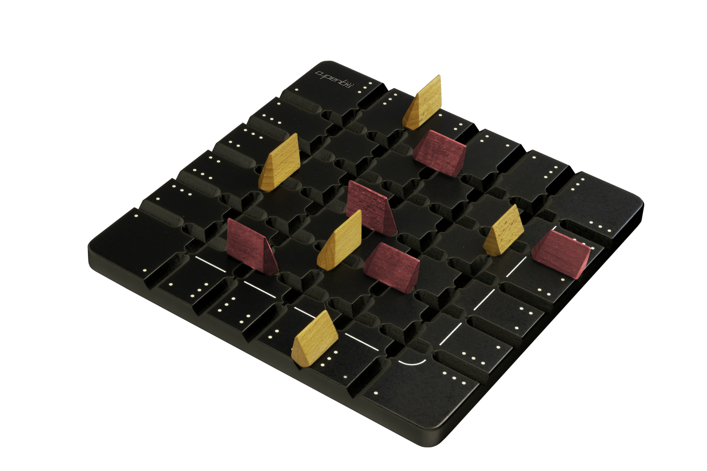

Origin: March 2015.
SQUADRO (originally "AZI") is a game I came up with during a stay in China, in March 2015. The idea behind it was to see what would be the result of trying to create a board game if I were to be the first human ever to invent a board game. The game confronts two players (teams) on a square grid. The standard game is played on an 5×5 grid, although it can be played on any arbitrary size without its rules changing.Origen: Marzo de 2015.
SQUADRO (originalmente "AZI") es un juego que se me ocurrió durante una estancia en China, en marzo de 2015. La idea detrás de ello fue ver cuál sería el resultado de intentar crear un juego de mesa si yo fuese el primer humano de la historia en inventar un juego de mesa. El juego enfrenta a dos rivales (equipos) en un tablero cuadrado. El juego estándar se juega en un tablero 5x5, pero se puede jugar en cualquier tamaño arbitrario sin que sus reglas cambien.Play-test: 2015 - 2017.
During this period I play-tested the game with friends, family and, mostly, colleagues at the univerisity. This helped me tune the rules and design of the game. I am specially thankful to Yumehito Kawashima, who became my greatest and fiercest opponent, and who played with me just for fun on a daily basis.
After long time playing the game and receiving a lot of support from everybody who tried it, I decided to contact some game companies looking for a publishing partner.Pruebas: 2015 - 2017.
Durante este periodo probé el juego con amigos, familia y, sobre todo, compañeros de la universidad. Esto me ayudó a ajustar las reglas y el diseño del juego. Estoy especialmente agradecido a Yumehito Kawashima, quien fue mi mayor rival y quien jugó conmigo a diario sólo por diversión.
Tras jugar durante bastate tiempo al juego y recibir mucho apoyo de todas las personas que lo probaron decidí contactar con empresas para tratar de buscar un socio que estuviese interesado en publicar mi juego.Publishing: October 2018.
I signed a contract with GIGAMIC in June 2017, and after some further tuning of the rules of the game and some changes in design and name, the game was ready to be published in October 2018.Publicación: Octubre de 2018.
En junio de 2017 firmé un contrato con GIGAMIC, y tras algunos ajustes más de las reglas y algunos cambios en nombre y diseño el juego estaba listo para publicarse en octubre de 2018.
In few words:
Each player starts with their five pieces in troughs on their side of the game board, with players sitting perpendicular to one another. When you move a piece, you move it a distance based on the strength indicated in the trough that you're leaving. Once the piece has made its way across the board, you move it back based on the strength on the new trough reached. If you pass over an opposing piece while moving, then that opposing piece must return to its last base, and your piece advances one more cell.
The first player to make a return trip with four of the five pieces wins.En pocas palabras:
Cada jugador comienza con sus cinco piezas alineadas en las casillas de salida, estando los jugadores sentados perpendicularmente. Cuando mueves una pieza avanzas tantas casillas como la fuerza indicada en la base de la casilla inicial. Cuando tu pieza llega al final del tablero se le da la vuelta y regresa con la fuerza indicada en la nueva casilla de salida. Si pasas por encima de alguna pieza rival en tu camino, esa pieza deberá volver a su última casilla de salida y tu pieza avanza una casilla más allá de donde estaba el rival.
El primer jugador en hacer un viaje de ida y vuelta con cuatro de las cinco piezas ganas.In detail:
En detalle:
- Pieces only move vertically (in their own column).
- Las piezas sólo mueven verticalmente (en su propia columna).
- Pieces advance as much as the value under their starting cell indicates.
- Las piezas avanzan tanto como el valor indicado en su casilla de salida.
- When a piece reaches its last row, the piece turns around. The new value for the piece to advance is the one written under the new starting cell.
- Cuando una pieza llega a la última fila se le da la vuelta. El nuevo valor de avance es el marcado en la nueva casilla de salida.
- If a player performs a move and there is an opponent's piece in the way:
- Si un jugador mueve y hay una pieza rival en su camino:
- The piece in turn moves to one cell further than where the opponent's piece was.
- La pieza en turno mueve una casilla más allá de donde estaba la pieza rival.
- The opponent's piece moves back to its last starting cell.
- La pieza rival vuelve a su última casilla de salida.
- If there is yet another opponent's piece in the new cell, repeat from step 1.
- Si hay otra pieza rival en la nueva posición, repetir desde el paso 1.
- When a piece gets back to the row where it started the game the piece ends its game. It should be left in the row without being turned around.
- Cuando una pieza regresa a la casilla de la que partió acaba su carrera. Deberá ser dejada en la fila sin ser dada la vuelta.
- When all pieces but one reach the starting row, the player in turn wins the game. The game is over.
- Cuando todas las piezas menos una llegan a la fila de inicio el jugador en turno gana. La partida ha acabado.
- Extra: loops (to reach the exact same position in which both players were some states ago) are banned. The players ought not to incur one.
- Extra: los bucles (llegar exactamente a una situación donde los jugadores ya se han encontrado hace algunos estados) están prohibidos. Los jugadores no deben provocarlos.
From October 2018:
SQUADRO is published by . Big thanks to them for believing in my game.
. Big thanks to them for believing in my game.Desde octubre de 2018:
SQUADRO es publicado por. Muchas gracias a ellos por creer en mi juego.
Gigamic: Official website. (
") )
)Gigamic: Página oficial. (
)BoardGameGeek: Biggest board game fan community, where further details of the game and game ratings can be found. (
") )
)BoardGameGeek: La mayor comunidad de aficionados a los juegos de mesa, donde se pueden encontrar detalles y valoraciones del juego. (
)The Dice Tower: Extensive review and first impressions of Squadro by Zee Garcia. (
)The Dice Tower: Extensa valoración y primeras impresiones de Squadro de la mano de Zee Garcia. (
)LudoVox: Clip briefly explaining the rules of the game in words of Mathilde, from Gigamic, at the Cannes Festival International des Jeux 2018. (
)LudoVox: Breve vídeo explicando las reglas del juego en palabras de Mathilde, de Gigamic, en el Cannes Festival International des Jeux 2018. (
)
Click to expand
Haz clic para agrandar

